Are you wondering why Location services are grayed out? Or how to have location services configured the way you want them? Tbh, these settings are a mess! There is no good documentation about it.
There are two types of grayed out:
Location has been turned off by an admin on this device
This might be a scenario device was provisioned from Autopilot, it has skipped the OOBE privacy page, Location services are turned off for all users by default, without any Intune policy controlling the setting. If you log in as an administrator, you can turn it on for all users, but standard users can’t turn on location services.
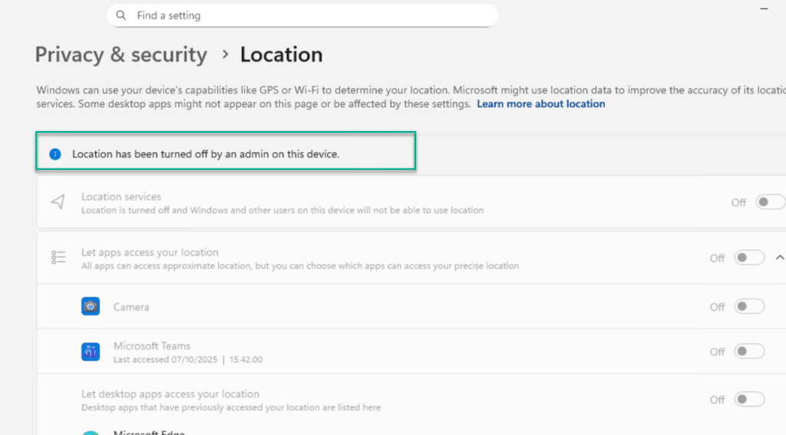
Some of these settings are managed by your organization
This is when you have configured location services related settings from Intune, GPO, or registry.
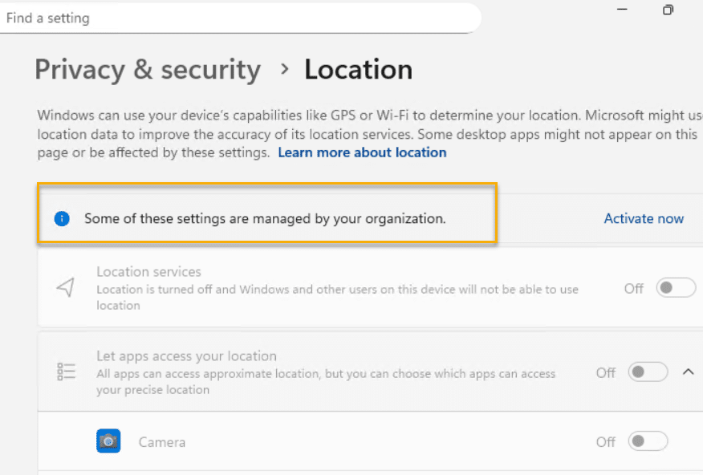
When “Location services” is disalbed, apps won’t able to use location service, regardless if the “let apps access your location” has the toggle turned On, or if the app itself has the toggle turned on.
What settings can we configured in Intune?
Setting: Let Apps Access location
This setting has three options: User in control, Force allow, Force deny.
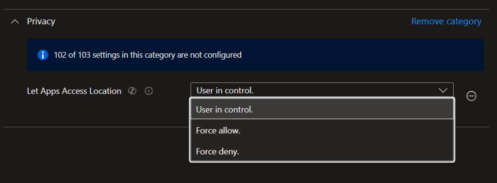
When it configured as “Force allow“, it will enforce enabled Location services as well, everything will be enabled and grayed out.
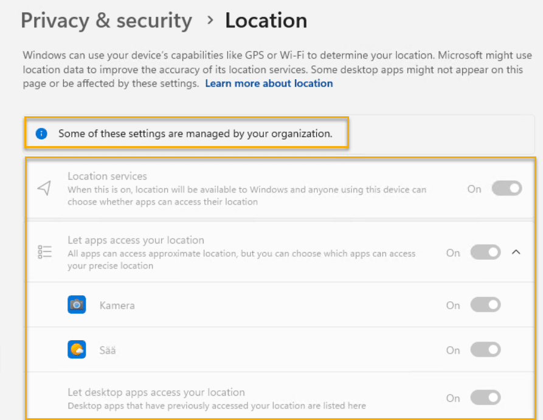
When it configured as “Force deny“, it will enforce enabled Location services as well, everything will be enabled and grayed out.
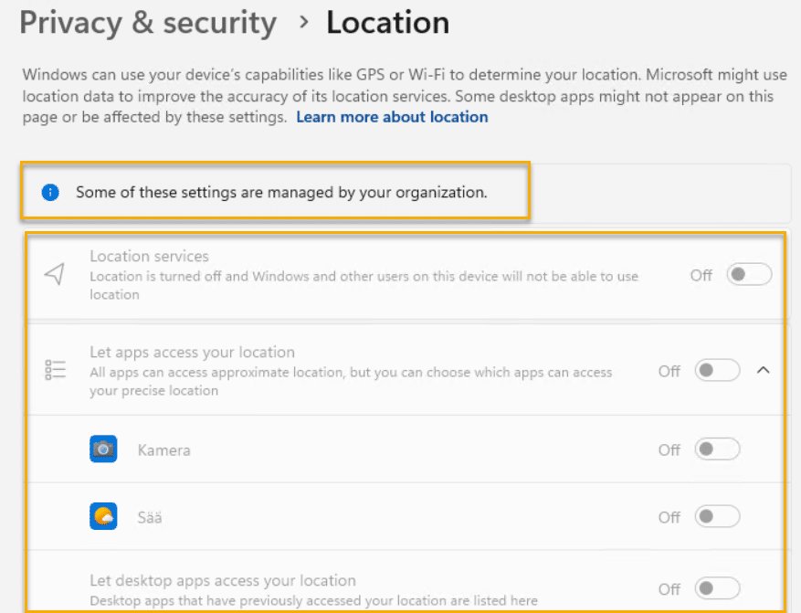
But what about “User in control“? In this case, because of Location services are disabled by admin, configuring Let Apps Access location as “User in control” doesn’t have any impact. It shows like this.
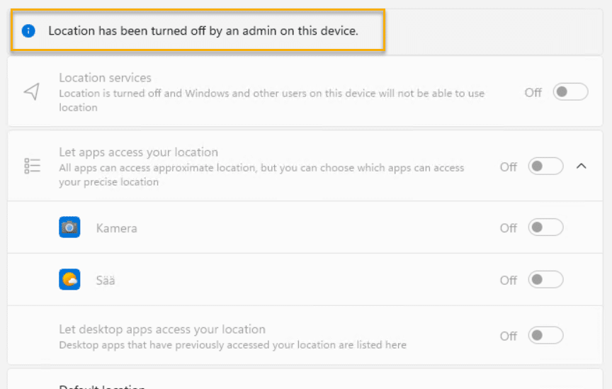
I also tried Disable “Turn off location”, Disable “Turn off sensors” like this, but still Location services, and Let apps access your location are turn off and grayed out.
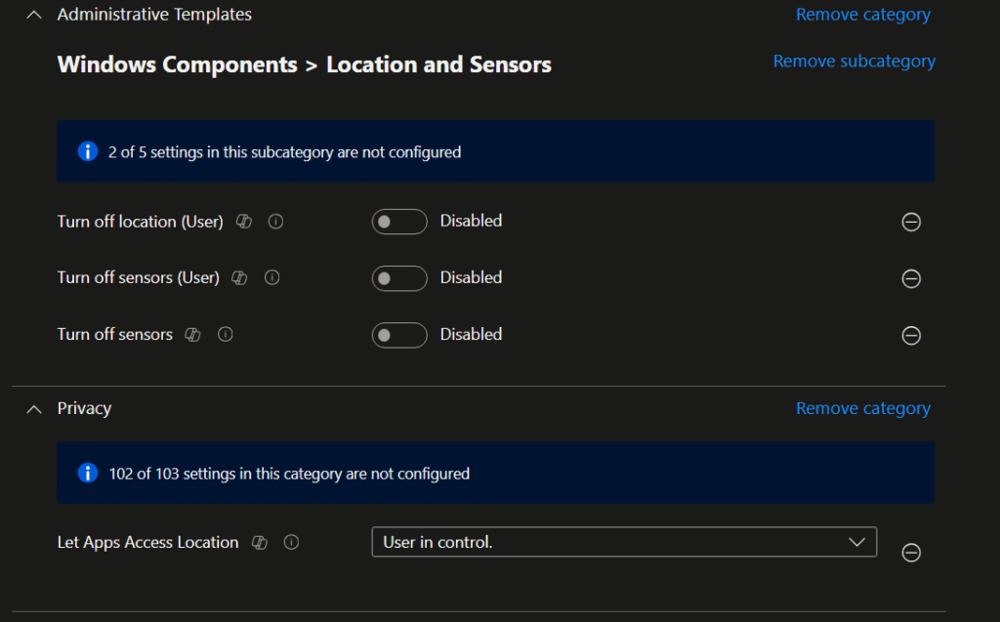

Setting: Let Apps Access Location Force Allow These Apps
Example I want to allow Microsoft Teams and Settings (for automatic timezone) to access location services for all users.
Use Get-AppPackage to get the PackageFamilyName
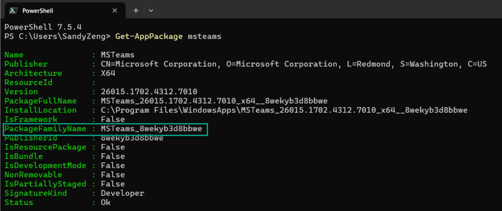
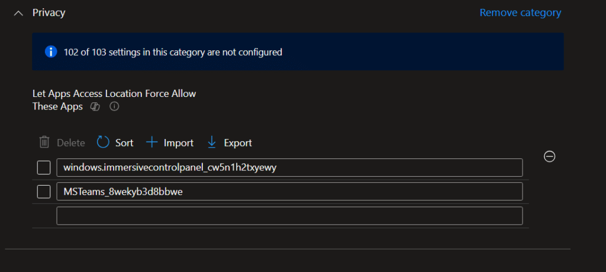
Microsoft Teams is automatictly granted access to location services, user will not get prompted to ask permission access location service, but still location services and let apps access your location are disabled, grayed out, and in fact Microsoft Teams won’t able to access location service as well.
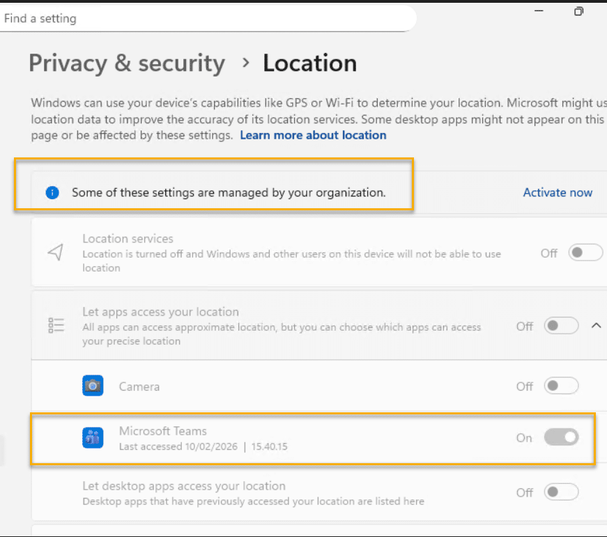
How to enable “Location services”, allow user to control “Let apps access your location” for standard users without login first as administrator?
First thing first, we need to enable “Location services” without login as administrator. Unfortuantly I didn’t find any Intune policy, GPO settings or registry can configured this. Only thing I can turn “Location services” from Off to On, is by using this command in elavated permssion. You can make a PowerShell script deploy it from Intune and run as System context.
"C:\Windows\system32\SystemSettingsAdminFlows.exe" SetCamSystemGlobal location 1In Intune Settings Catalog, I have configured these few settings. I have configured “Turn off location (User)”, “Turn off sensors” and “Turn off sensors (User)” to Disabled, just incase if they are needed.
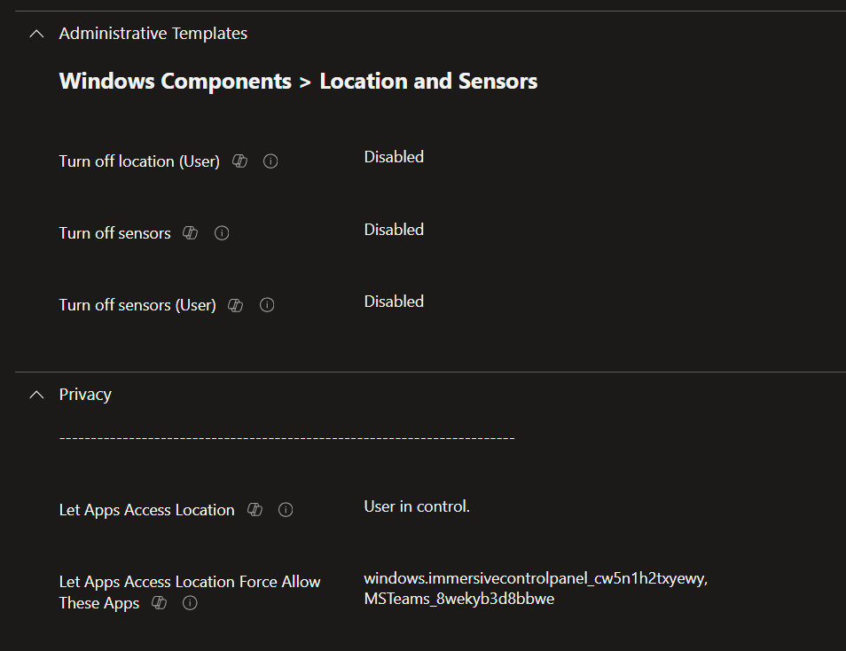
Now standard user can have control of “Let apps access your location”, user can turn this setting On or Off, except the apps you have configured in Force Allow list.
How about turn on “Let apps access your location” by default for standard user?
Now that we have enabled “Location services” for all users, specially for standard user, and allow standard user to turn “Let apps access your location” on or off, but how about if we want to turn on “Let apps access your location” as as default and allow user to change it if they want to?
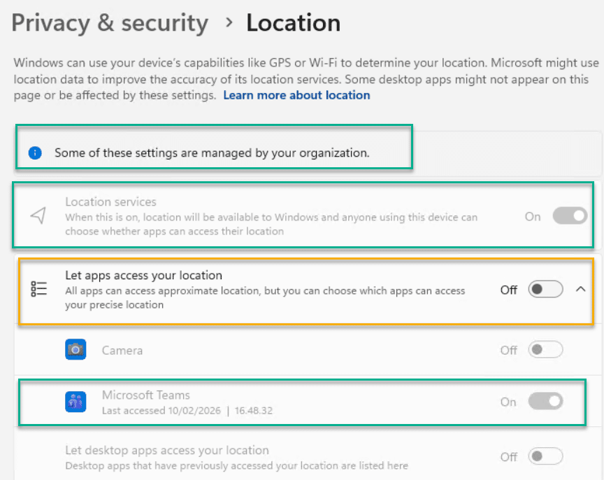
Unfortuantly I didn’t find a way to do that. It used to be possible to do this by modifying user registry HKCU:\SOFTWARE\Microsoft\Windows\CurrentVersion\CapabilityAccessManager\ConsentStore\location , but this options no longer work anymore.
Summarize
If you want to enfoce all apps access location services, set “Let Apps Access Location” to “force allow”
If you want to disable all apps access location services, set “Let Apps Access Location” to “force deny”
If you want to allow standard user user access location service, and control apps permission by themselves, make sure “Location Service” is turned on first.